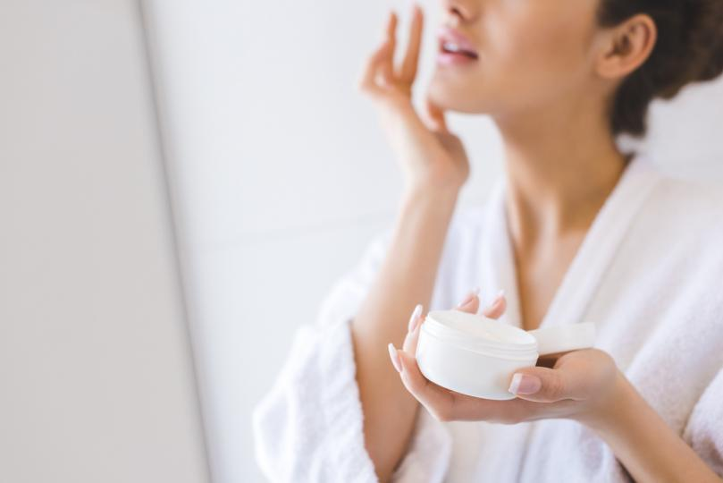
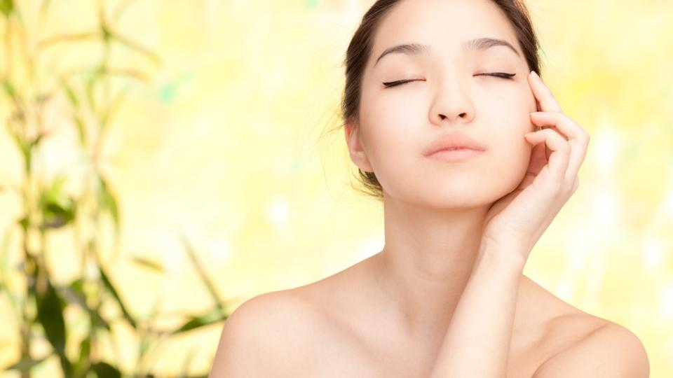
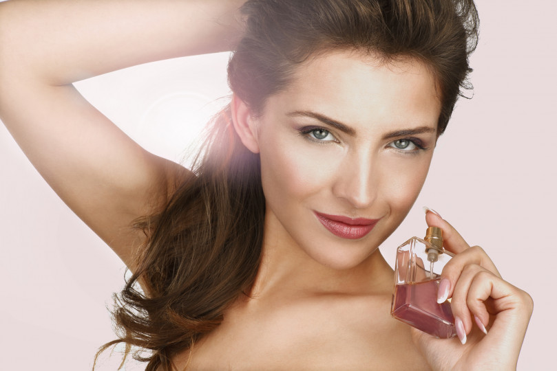

Без значение дали ще изберете класическите кройки и цветове или сте решили да експериментирате, изборът на перфектната рокля винаги може да е повече от един, защото няма само една-единствена идеална рокля - няколко са! И днес ви разкриваме
точно кои са те.
Флорална рокля с А-силует
Флоралните мотиви дават много положителни, летни и плажни емоции. Независимо дали става дума за ежедневна рокля или официална рокля, цветните щампи върху тях винаги са хит. Дори и през зимните дни обличането им само би довело до подобряване на мрачното
ви настроение.
Публикувано от Теодора Милчева
Как да нанасяте фон дьо тен като професионалист

Красивият грим е редно да върви в комплект с добра грижа за кожата. Премахнете мъртвите клетки и изгладете кожата с подходящ ексфолиант и нежни кръгови движения.
Погрижете се да намерите най-пододящия крем за вашата кожа. След като се убедите, че е попил добре, нанесете фон дьо тена.
Публикувано от Теодора Милчева
Красота
Тайната на безупречната кожа на корейките

Едва ли съществува почитател на бялата козметика, който да не е запознат с вълшебството, наречено К-beauty. Често, гледайки снимки на корейско семейство, изобразяващи три поколения – баба, майка и дъщеря, е трудно да се отгатне коя от
тях е най-млада заради безупречната кожа! Тайната им е в магическата корейска козметика, която от години все по-сериозно стъпва на нашия пазар и манията по нея става все по-осезаема. Нека първо да отворим речника и да се запознаем
с някои от термините, които се използват за обозначаване на корейските козметични продукти. Ако ние сме свискали с понятия като: крем, маска, серум, тоник и т.н. при тях наименованията са по-разнообразни. Ритуалът за красива кожа включва
няколко етапа – почистване, пилинг, хидратация и маска.
Сред най-известните са Gel (измиващ гел за лице), Balm (нежем измиващ балсам за лице), Oil (измиващо олио), Cream (крем, който се разпенва при досег с вода), Foam (почистваща пяна за лице), Bar (почистващ сапун за лице).
В корейската козметика има и термин Powder, който тук сме свикнали да свързваме с пудрата в качеството й на декоративна козметика. При тях, обаче, това е почистващ продукт под формата на пудра, който преди употреба се смесва с вода.
От Теодора Милчева
Тайните за красота на французойките (ключът е в една думичка)

Французойките имат свой ароматен подпис. Запомнящ се качествен аромат, с който да оставят незабравимо усещане за себе си.
Французойките обичат маските за лице. За да видите ефекта от маските, е хубаво да ги правите веднъж или два пъти седмично. Най-лесно е просто да се намажете с мед и после да отмиете с хладка вода.
Французойките вярват, че колкото по-малко, толкова по-добре. Няма да видите прекалила с грима французойка. Хубава кожа и ярко червило, достатъчно е. Важно е да подчертаеш красотата си, а не да изглеждаш коренно различна със или без грим.